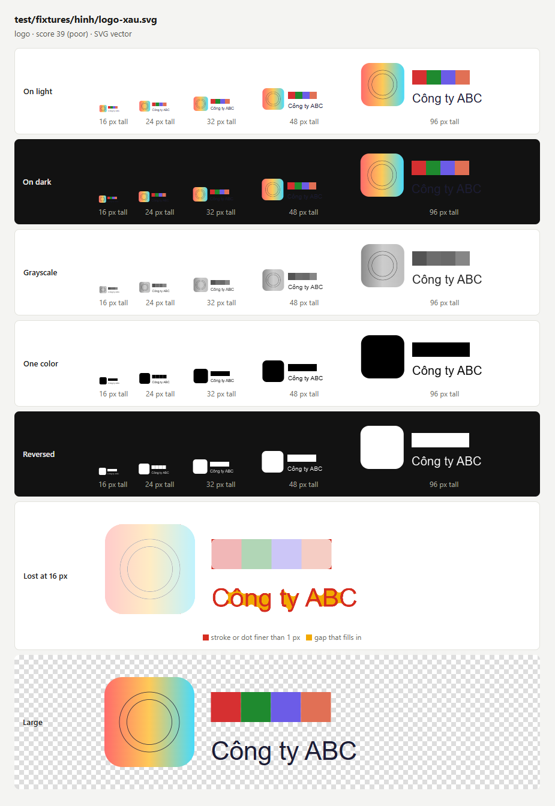
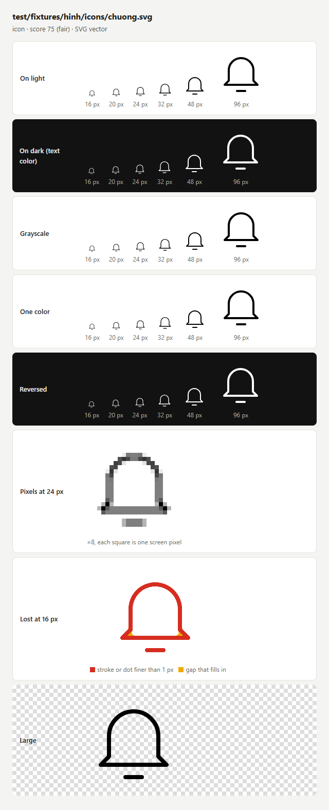
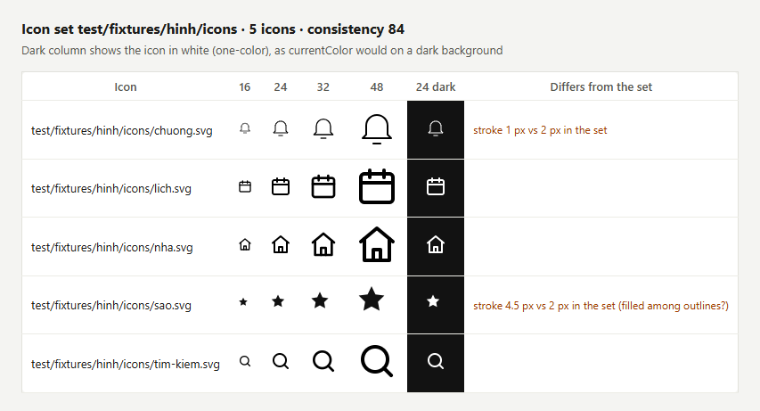
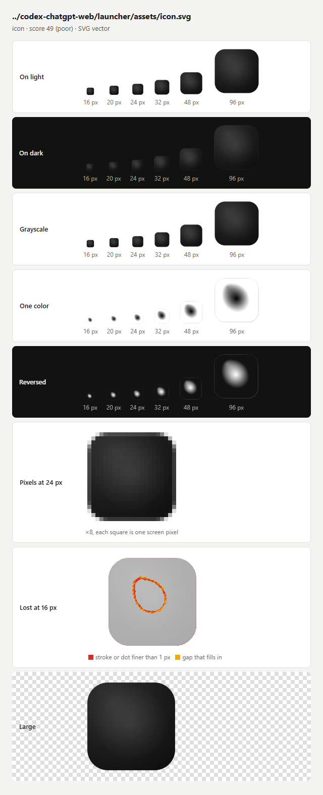
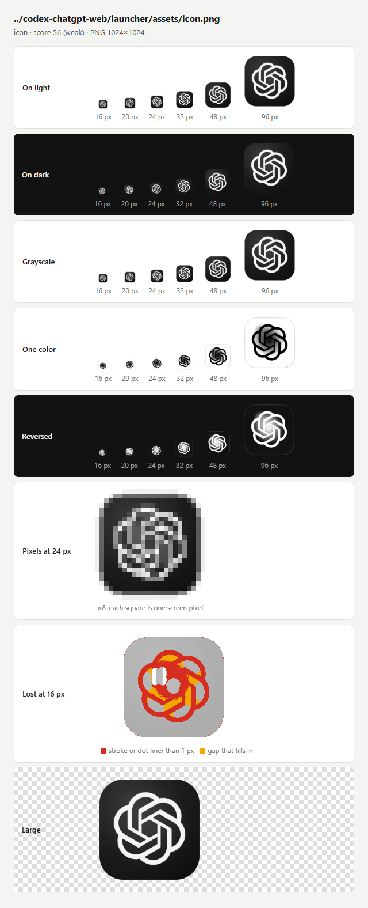
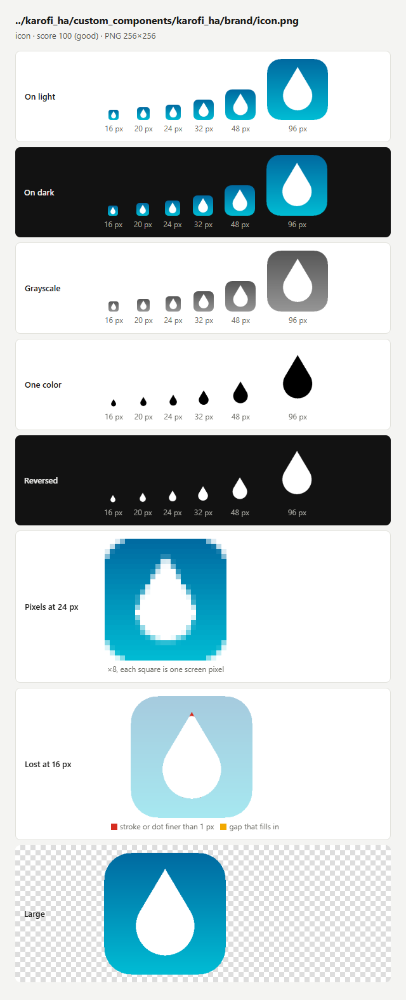

design-kit · 18/11/2026
Chấm điểm logo, icon và hình vẽ
design-kit có lệnh mới design-kit check-image: chấm từng logo, icon, ký hiệu hay hình minh hoạ từ 0 tới 100 bằng số đo thật, nói rõ vì sao mất điểm, và lưu một tờ soát để anh xem những gì máy không chấm được.
Cách dùng
design-kit check-image brand/logo.svgchấm một logodesign-kit check-image icons/ --strictcả thư mục icon, so với nhau như một bộdesign-kit check-image hero.png --kind illustration --display 1200minh hoạ hiện rộng 1200 pxdesign-kit check-image brand/ --min-score 70 --strictthoát 1 khi có hình dưới 70 điểm
Mỗi hình nhận một dòng điểm, các tiêu chí kèm số đo, và các phát hiện cứng (chưa được báo xong, điểm bị giữ ≤ 49) hoặc mềm (sửa hoặc ghi lý do). Đọc được SVG, PNG, JPEG, WebP, AVIF, GIF, ICO. Loại hình được đoán theo tên tệp rồi theo cỡ và màu; đoán sai thì truyền --kind. Không thêm gói phụ thuộc nào: Edge sẵn có làm việc giải mã và vẽ.
Chấm những gì
Mọi điểm đến từ số đo trên điểm ảnh và mã SVG, không nhờ mô hình nhìn ảnh chấm thẩm mỹ: đợt nghiên cứu trước đã thấy mô hình như vậy chấm "hoàn hảo" 14/15 hình hỏng.
| Tiêu chí | Đo gì | Logo | Icon | Minh hoạ | Căn cứ |
|---|---|---|---|---|---|
| Thu nhỏ | Phần đường viền thuộc nét, chấm, khe mảnh hơn 1 px ở 32 và 16 px (mũi nhọn không tính) | 30 | 20 | — | Material nét 2 dp; Fluent giảm chi tiết dưới 48 px; NHS logo ≥ 30 px |
| Tương phản | Dải viền ngoài của hình đạt 3:1 trên nền trắng và nền tối | 20 | 10 | 15 | WCAG 1.4.11 (icon bắt buộc; logo được miễn nên chỉ là cổng mềm) |
| Thang xám | Các màu chạm nhau còn tách được chỉ bằng độ sáng | 20 | — | 10 | Logo không được dựa vào màu; WCAG 1.4.1 |
| Bảng màu | Số màu phẳng, phần chuyển sắc; icon nên một màu, dùng currentColor | 5 | 10 | — | Fluent, Carbon: icon một màu đặc |
| Lưới điểm | Cạnh thẳng nằm giữa hai điểm ảnh ở cỡ gốc (thành vệt xám 2 px) | — | 15 | — | Carbon: toạ độ nguyên điểm ảnh |
| Khung | Lề, độ đầy khung, lệch tâm, khung vuông, vòng an toàn maskable | — | 15 | — | Material vùng sống 20/24; W3C maskable 40% |
| Độ đơn giản | Độ phức tạp chu vi (chu vi² / diện tích) | ghi | 10 | — | Pelli 2006: Helvetica 67, chữ Hán 199, Künstler 451; logo không có mức tối ưu nên chỉ ghi |
| Độ sắc | Bề rộng các cạnh mạnh nhất (ảnh bị phóng to thì cạnh rộng) | — | — | 30 | Marziliano 2002; mốc tự hiệu chỉnh |
| Độ phân giải | Cỡ thật so với --display | cờ | cờ | 15 | Lighthouse: 2× tới 64 px, 1,5× trên đó |
| Tệp | SVG sạch (script là cứng; chữ sống, ảnh nhúng, tham chiếu ngoài, thiếu viewBox là mềm), định dạng, dung lượng | 25 | 20 | 30 | SVG làm ảnh không nạp font ngoài; SVG chứa script gây XSS; Chrome nhắm ~1/6 byte mỗi điểm |
Nguồn đầy đủ: 43 nguồn mới (s74–s116) và 51 luận điểm (c79–c129) trong docs/nguon.md; ngưỡng và lý do trong docs/tieu-chi.md, mục "Hình".
Đo "chi tiết mất khi thu nhỏ" thế nào
- Vẽ lớn
SVG với cạnh ngắn 512 điểm, ảnh điểm ở cỡ thật; tách hình khỏi nền (trong suốt, ô gạch, nền đặc).
- Mở hình
Một đĩa rộng đúng 1 px của cỡ 32 hay 16 px quét qua: nét, chấm, khe mảnh hơn thế biến mất.
- Đo theo viền
Lấy phần đường viền thuộc chỗ vừa mất, tính cả ranh giới giữa các màu bên trong hình.
- Bỏ báo nhầm
Bỏ lớp "bào" ở mép do rời rạc hoá, và mũi nhọn (diện tích / cạnh nối² dưới 2) vốn chỉ bị tròn đi.
Mốc hiệu chỉnh trên 272 icon Lucide: 99% icon mất dưới 1% ở 24 và 16 px; nét 0,5 px mất 100%; nét 1 px mất 0% ở 24 px và 100% ở 16 px.
Thử trên hình mẫu
Mỗi hình mẫu trong test/fixtures/hinh/ cố ý mắc (hoặc tránh) một nhóm lỗi; test đầu-cuối khoá các kết quả này.
| Hình | Điểm | Phát hiện chính |
|---|---|---|
logo-tot.svg | 95 tốt | Hai màu phẳng, nổi trên cả hai nền; chỉ ghi chú vạch mảnh trong lá mất ở 16 px (nên có bản favicon giản lược) |
logo-xau.svg | 39 kém | Chữ sống, thiếu viewBox, vòng nét 0,6 mất 58% viền ở 32 px, chữ tối biến mất trên nền tối, đỏ cạnh xanh lá chỉ 1,09:1 khi chuyển xám, 6 màu và 61% chuyển sắc |
logo-jpeg.jpg | 84 khá | Logo nên là SVG; hình phẳng lưu JPEG bị viền nhoè |
bieu-tuong-doc.svg | 49 kém | Cứng: <script> và onload trong SVG |
icon-manh.svg | 49 kém | Cứng: nét 0,5 px mất hết ở chính cỡ 24 px |
icons/ (5 icon) | bộ 84 | Chuông nét 1 px lệch lưới và lệch bộ; sao tô đặc lẫn trong bộ nét, tô cứng #111, lệch tâm 3 px |
minh-hoa-sac.png / -mo.png | 96 / 54 | Cùng một cảnh: bản xuất thẳng cạnh 2,0 px; bản phóng to ×3 cạnh 9,4 px |
app-maskable.svg | khá | 4% hình nằm ngoài vòng an toàn 40% của icon maskable |



Thử trên logo và icon thật trong D:\code
14 hình của 5 dự án (icon thương hiệu Home Assistant của karofi_ha, evncskh_ha, ariston_ha; icon của nutrikids; icon launcher của codex-chatgpt-web), 6,7 giây. Lần chạy đầu để lộ hai chỗ đo sai của chính công cụ, đã sửa (mục dưới); lần chạy sau:
Lỗi thật: icon.svg không hiện logo
Trong codex-chatgpt-web/launcher/assets/icon.svg, logo trắng nằm trong nhóm có filter="url(#mark-shadow)". Vùng lọc khai báo theo userSpaceOnUse (x 116, rộng 792) nhưng nhóm bị scale(28), nên vùng lọc dời ra ngoài và cắt mất cả logo. Trên Edge, icon chỉ còn ô tối trơn; bản icon.png cùng tên thì vẫn đủ. Công cụ báo lỗi cứng "không nổi" cho bản SVG.
Icon thương hiệu Home Assistant: 98–100
Đây là icon dạng ô gạch (ô vuông bo góc, nền chuyển sắc, hình trắng ở giữa). Ariston mất điểm vì vạch cam dưới giọt nước chỉ còn 0,7 px ở 16 px. Logo PNG được nhắc nên có thêm bản SVG. Nutrikids: 42% đường viền là chi tiết mảnh ở 16 px.

icon.svg: chỉ còn ô tối, logo bị vùng lọc cắt mất.
icon.png cùng tên: logo hiện đủ, nhưng nét mảnh mất nhiều ở 16 px.
Những chỗ đo sai đã sửa nhờ xem ảnh
Máy đo đạt chưa phải là đúng: mỗi chỗ dưới đây chỉ lộ ra khi mở tờ soát hoặc chạy trên hình thật.
Đo theo diện tích bỏ sót nét mảnh dài. Hai vòng nét 0,6 biến mất hẳn mà chỉ chiếm 7% diện tích. Đổi sang đo theo đường viền.
Mép hình tròn bị "bào" và mũi nhọn bị tính là mất. Icon Lucide chuẩn từng báo 17%, ngôi sao 21%. Bỏ mảnh mỏng hơn 2 điểm và mảnh hình nêm: Lucide về dưới 1%.
Logo dài vẽ theo cạnh dài làm nét mảnh lọt mặt nạ. Vẽ theo cạnh ngắn 512 điểm.
Dò chuyển sắc đục lỗ vùng màu (một vòng điểm cách mép đúng 8 bị tính nhầm), làm logo tốt tụt 95 → 70; nhiễu JPEG cũng đục lỗ. Chỉ so điểm giữa vùng, lấp lỗ về vùng gần nhất.
Icon ô gạch bị coi cả ô là hình: 12 icon thật bị báo "chạm mép", bản một màu thành ô đen. Thêm chế độ ô gạch: khớp mặt phẳng màu trên dải vòng trong của ô.
Tờ soát ghi đè nhau khi icon.svg và icon.png cùng thư mục. Tên tờ giữ đuôi tệp.
Giới hạn và việc còn mở
- Không chấm ý nghĩa, độ dễ nhận ra, độ hợp thương hiệu: các thứ đó xem trên tờ soát.
- Độ phức tạp của logo chỉ được ghi, không chấm: nghiên cứu không cho mức tối ưu.
- Hook của plugin giờ nhắc chạy
check-imagekhi agent sửa logo, icon (theo tên tệp hoặc thư mục), và chặn một lần lúc dừng nếu chưa chấm. - Skill tăng từ khoảng 5,1 lên 5,3 nghìn token mỗi lần gọi (một gạch đầu dòng và từ khoá trong mô tả).
- Kho tri thức
research-hubcó 43 nguồn mới nhưng chưa commit; repo đó đang có thay đổi của phiên khác. - Chưa commit trong design-kit: nhánh main được bảo vệ, cần PR qua CI.
Chi phí của việc này
Đo bằng cc-usage từ lúc anh gửi yêu cầu (15:10:16) tới 16:03:28, khử trùng lặp theo requestId; phần mở trang và trả lời sau mốc này chưa tính. Giá là giá API niêm yết, không phải tiền gói thuê bao.
| Phần | Lệnh gọi | Input | Ghi cache | Đọc cache | Output |
|---|---|---|---|---|---|
| Phiên chính (Opus 5.5) | 157 | 314 | 555 615 | 62 187 103 | 300 141 |
| Agent nghiên cứu nguồn (Opus 5.5) | 122 | 248 | 296 646 | 23 589 039 | 83 160 |
| Tổng | 279 | 562 | 852 261 | 85 776 142 | 383 301 |
Quy đổi: khoảng 30,75 USD. Phần lớn là đọc lại ngữ cảnh (đọc cache) của phiên dài.